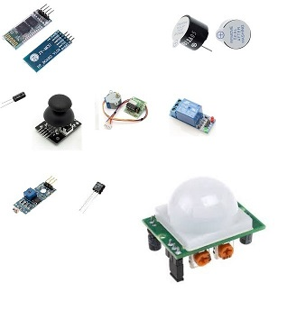
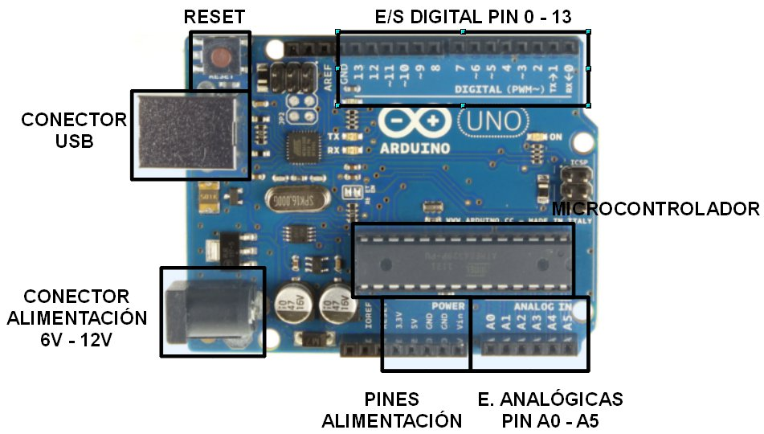
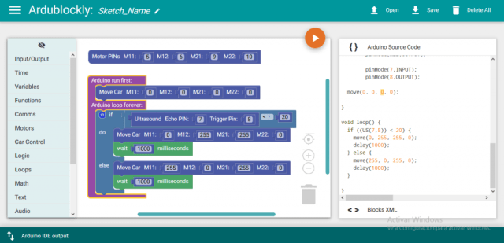

Descripcion de los productos de la empresa

Arduino se enfoca en acercar y facilitar el uso de la electrónica y programación de sistemas embebidos en proyectos multidisciplinarios
Los productos que vende la compañía son distribuidos como Hardware y Software Libre, bajo la Licencia Pública General Reducida de GNU (LGPL) o la Licencia Pública General de GNU (GPL),1permitiendo la manufactura de las placas Arduino y distribución del software por cualquier individuo. Las placas Arduino están disponibles comercialmente en forma de placas ensambladas o también en forma de kits hazlo tu mismo (Del inglés DIY: "Do It Yourself").
¿Que es ARDUINO?

es una compañía open source y open hardware, así como un proyecto y comunidad internacional que diseña y manufactura placas de desarrollo de hardware para construir dispositivos digitales y dispositivos interactivos que puedan detectar y controlar objetos del mundo real.
un Arduino es una placa de desarrollo de hardware abierto que puede ser utilizada por modificadores, aficionados y fabricantes para diseñar y construir dispositivos que interactúen con el mundo real. Si bien Arduino se refiere a un tipo específico de diseño de tablero, también se puede usar para referirse a una compañía que fabrica una implementación específica de estos tableros, y generalmente también se usa para describir a la comunidad en torno a tableros compatibles hechos por otras personas o compañías que funcionan en una manera similar.
¿Qué compone un ARDUINO?

Los Arduinos contienen varias partes e interfaces diferentes juntas en una sola placa de circuito. El diseño ha cambiado a través de los años, y algunas variaciones incluyen otras partes también. Pero en un tablero básico, es probable que encuentres las siguientes piezas:
Una serie de pines, que se utilizan para conectar con varios componentes que puede usar con el Arduino. Estos pines vienen en dos variedades:
>Las clavijas analógicas, que pueden leer un rango de valores, son útiles para un control más preciso. La mayoría de los arduinos tienen seis de estos pines analógicos.
>Pines digitales, que pueden leer y escribir un solo estado, encendido o apagado. La mayoría de los Arduinos tienen 14 pines de E / S digitales.
¿Cómo programo un ARDUINO?

La mayoría de los entusiastas de Arduino, especialmente cuando están comenzando, elegirán utilizar el entorno de desarrollo integrado oficial (IDE) para Arduino. El IDE de Arduino es un software de código abierto que está escrito en Java y funcionará en una variedad de plataformas: Windows, Mac y Linux. El IDE le permite escribir código en un entorno especial con resaltado de sintaxis y otras características que facilitarán la codificación, y luego cargar fácilmente su código en el dispositivo con un simple clic de un botón.
El código para Arduino generalmente está escrito en Wiring, que se basa en el lenguaje de programación Processing.